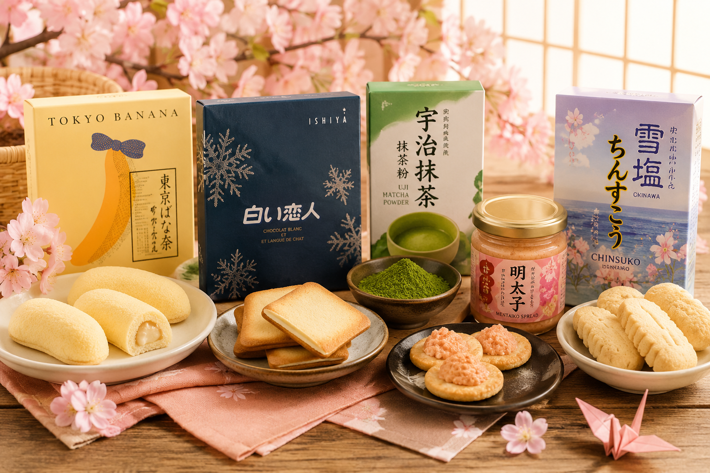

關於 おみやびより
把日本旅行中的美味回憶，溫柔送到你的日常生活裡。

🍡 我們的理念
おみやびより是一間以日本各地人氣伴手禮為主題的訂購網站。 透過每一份精選名產，讓顧客不用出國，也能感受到日本旅行中的幸福滋味。
🗾 精選日本名產
從東京香蕉、京都宇治抹茶粉，到福岡明太子抹醬、北海道白色戀人與沖繩雪鹽餅乾， 每一項商品都代表著不同地區的特色文化與風味。
💖 用心服務
我們重視安心、便利與溫暖的購物體驗，希望讓每一次訂購， 都像收到一份來自日本的小小禮物。
把日本旅行中的美味回憶，溫柔送到你的日常生活裡。

おみやびより是一間以日本各地人氣伴手禮為主題的訂購網站。 透過每一份精選名產，讓顧客不用出國，也能感受到日本旅行中的幸福滋味。
從東京香蕉、京都宇治抹茶粉，到福岡明太子抹醬、北海道白色戀人與沖繩雪鹽餅乾， 每一項商品都代表著不同地區的特色文化與風味。
我們重視安心、便利與溫暖的購物體驗，希望讓每一次訂購， 都像收到一份來自日本的小小禮物。